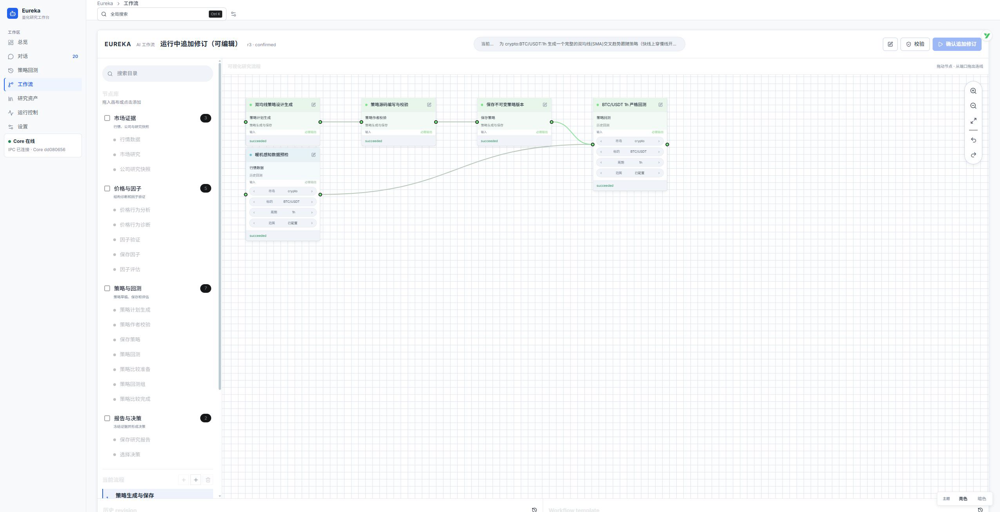
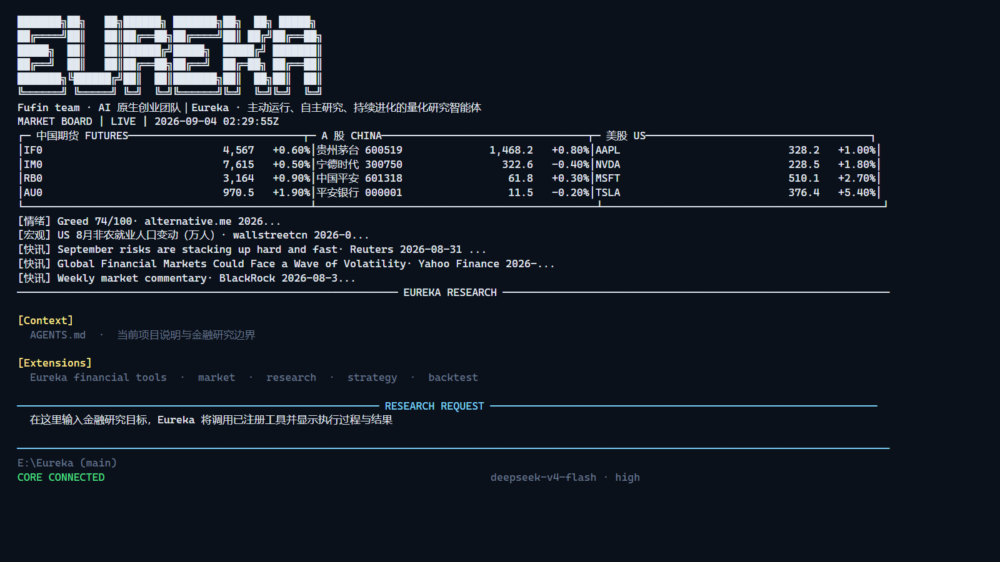
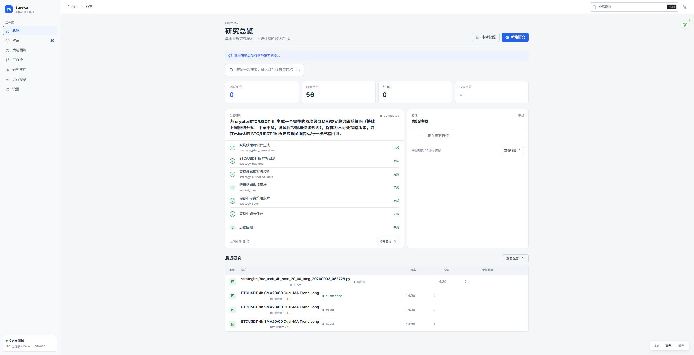
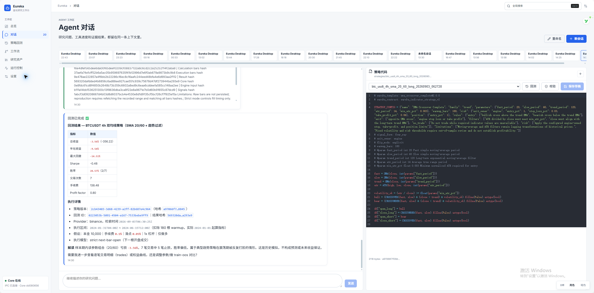
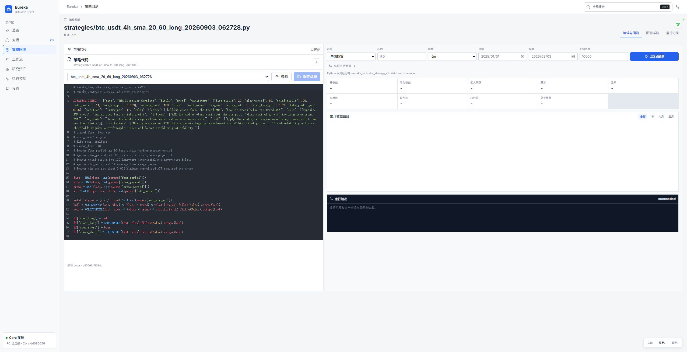
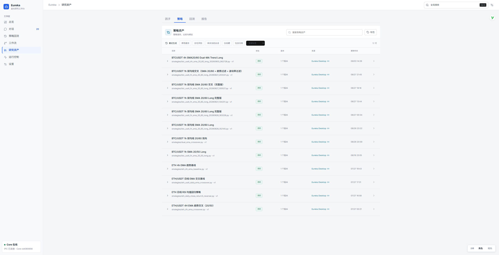
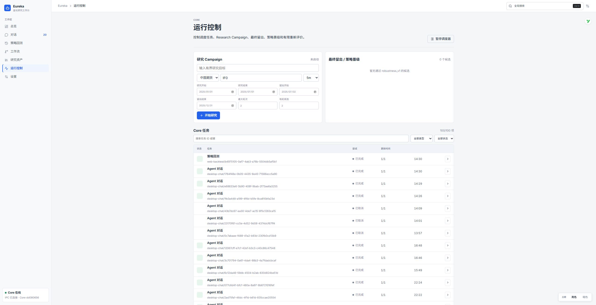
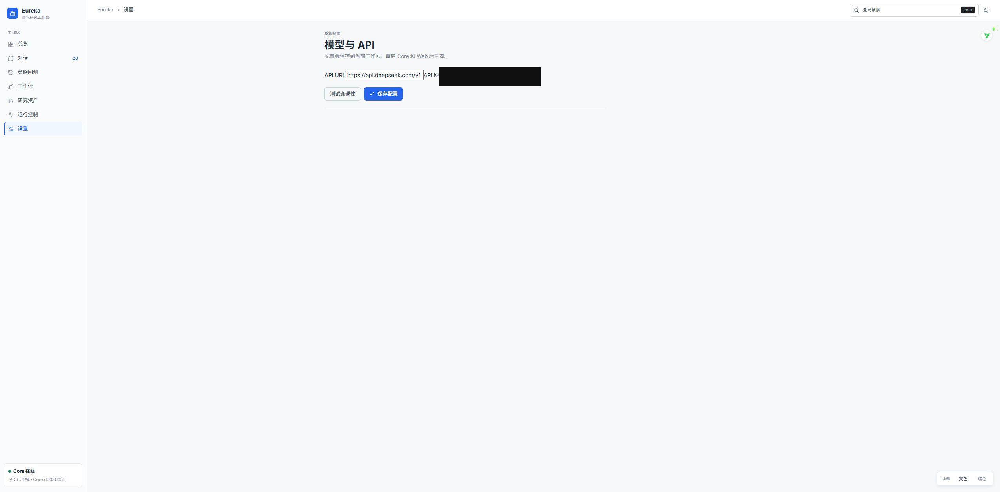

降低幻觉风险
将金融公式、阈值、规则与算法编码为注册工具，以受约束程序执行。Agent 可以解释结果，但不能用生成文本替换结构化事实。
WHY EUREKA
关键事实不应依赖模型临场发挥。Eureka 让 Agent 负责理解和编排，让确定性系统负责计算、执行与记录。
将金融公式、阈值、规则与算法编码为注册工具，以受约束程序执行。Agent 可以解释结果，但不能用生成文本替换结构化事实。
自研确定性分析、数据合同与执行适配层，统一闭合 K 线、指标暖机、因子评价、策略校验、严格时序和结果哈希。
以工具注册作为唯一领域能力入口，将行情、公式、计算层、策略、回测与报告编排为一条可观察的执行链。
Agent 生成动态 DAG 研究计划，用户可以在画布中编辑节点与连线、校验依赖，并通过审计修订控制后续执行。
PRODUCT DEMO
完整记录真实交互过程。可直接播放，也可以打开原文件查看。
ONE CAPABILITY GATEWAY
这条边界把“会说”与“算对、留痕、可复查”分开。每一次调用都有明确名称、输入、状态、输出和资产归属。
EDITABLE WORKFLOW
复杂研究不是一次问答。Eureka 将计划变成动态 DAG，把工具调用、依赖关系、执行状态和研究产物呈现在同一张画布上。

TWO CLIENTS · ONE CORE
两种客户端连接同一个 Eureka Core，复用同一套注册工具、计算能力、SQLite 记录和不可变资产谱系。

面向研究人员与开发者的高效入口。固定 Market Board、Agent 对话、工具进度和结果共处同一终端视图。

Electron Desktop 与 localhost Web 工作台，集中呈现对话、回测、工作流、资产和运行控制。
THE WORKBENCH
每个页面都来自同一个本地 Core 和真实 SQLite 状态。






CLEAR BOUNDARIES
01确定性工具降低幻觉风险，但不代表模型永远不会出错。
02历史回测与稳健性比较，不证明策略具有未来收益。
03Research Campaign 有明确预算与轮次，不是无限自主优化。
04当前不包含券商账户、自动下单或实盘交易。
CONTACT EUREKA
产品交流、技术探讨与合作，请通过 GitHub 联系。
GitHub：@Ching-Chiang